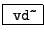

The next example, G03.delay.variable.pd (Figure 7.25), is another recirculating comb filter, this time using a variable-length delay line. One new object is introduced here:
:
Read from a delay line, with a time-varying delay time. As with the
delread~ object, this reads from a delay line whose name is specified
as a creation argument. Instead of using a second argument and/or
control messages to specify the delay time, for the vd~ object the delay in milliseconds is specified by an incoming audio signal.
The delay line is read using four-point (cubic) interpolation; the minimum
achievable delay is one sample.
Here the objects on the left side, from the top down to the clip -0.2 0.2 object, form a waveshaping network; the index is set by the ``timbre" control, and the waveshaping output varies between a near sinusoid and a bright, buzzy sound. The output is added to the output of the vd~ object. The sum is then high pass filtered (the hip~ object at lower left), multiplied by a feedback gain, clipped, and written into the delay line at bottom right. There is a control at right to set the feedback gain; here, in contrast with the previous example, it is possible to specify a gain greater than one in order to get unstable feedback. For this reason the second clip~ object is inserted within the delay loop (just above the delwrite~ object) so that the signal cannot exceed 1 in absolute value.
The length of the delay is controlled by the signal input to the vd~ object. An oscillator with variable frequency and gain, in the center of the figure, provides the delay time. The oscillator is added to one to make it nonnegative before multiplying it by the ``cycle depth" control, which effectively sets the range of delay times. The minimum possible delay time of 1.46 milliseconds is added so that the true range of delay times is between the minimum and the same plus twice the ``depth". The reason for this minimum delay time is taken up in the discussion of the next example.
Comb filters with variable delay times are sometimes called flangers. As the delay time changes the peaks in the frequency response move up and down in frequency, so that the timbre of the output changes constantly in a characteristic way.